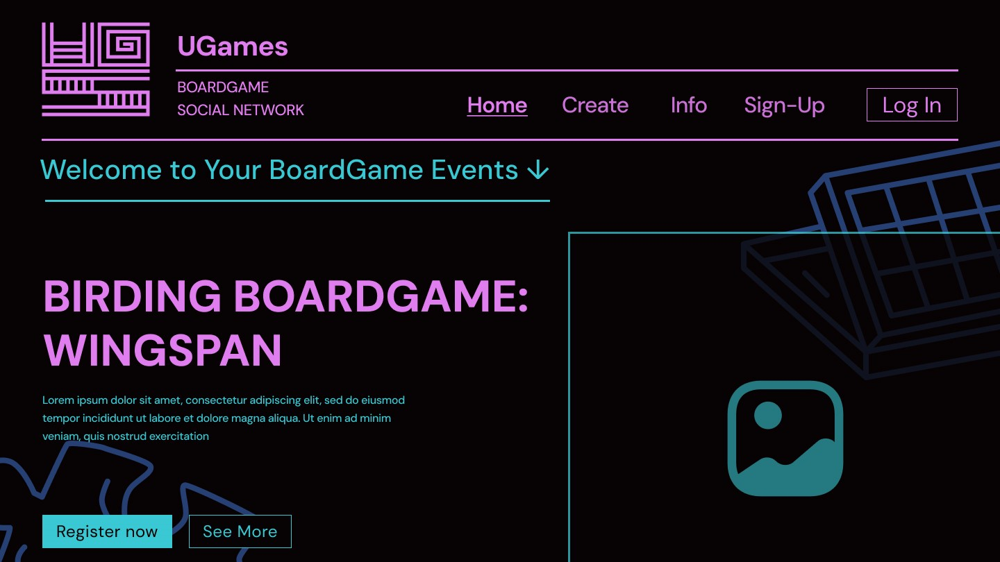
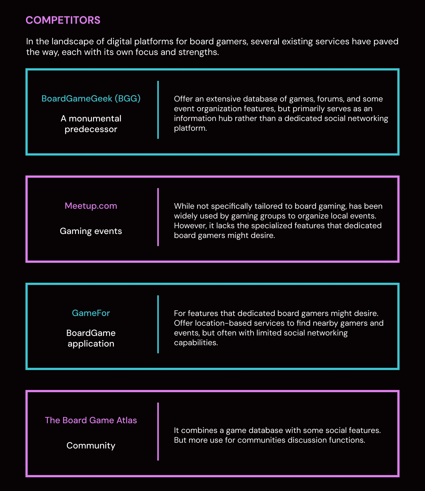
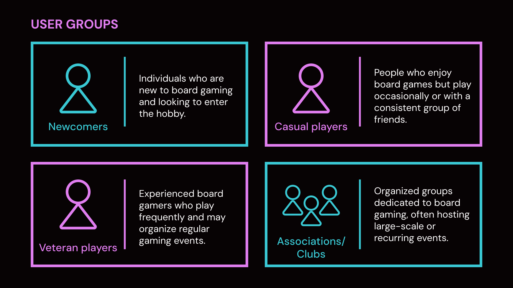
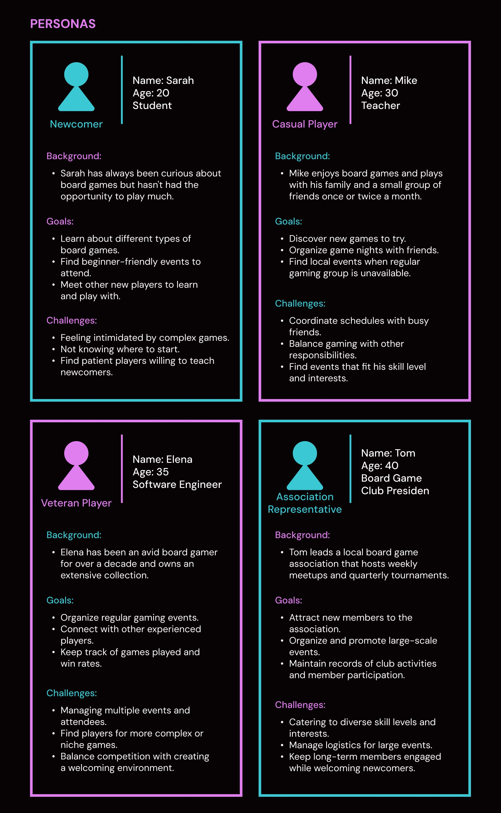
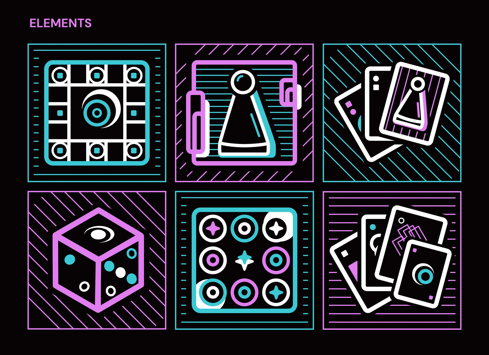
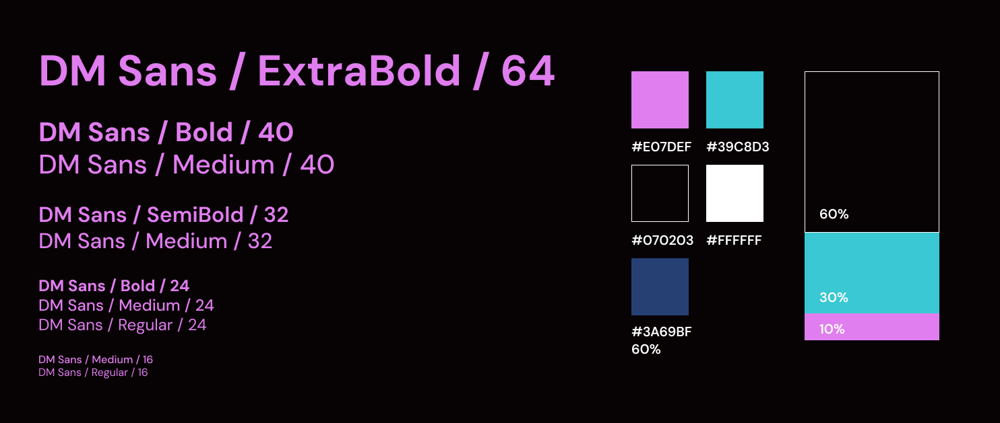

UGames closes the one gap no existing board-game service owns: it folds event organisation, social networking and play tracking into a single loop — so the hardest part of the hobby, coordinating people, stops being the user's job.
00Executive Summary
What this project is, and why it worksUGames is a digital home for the tabletop community. Board gamers are already online — but they are split across a database site for rules, a generic event site for meetups and a map app for finding tables. Nobody owns the full journey. UGames takes the four things a board gamer actually does — find a game, host a session, track plays, keep the crew together — and builds them as one continuous experience.
- The gap was proven, not assumed. Four established services — BoardGameGeek, Meetup.com, GameFor and The Board Game Atlas — each solve one dimension well and leave the others open. The audit credits what each does better than us, and that is precisely what makes the gap visible.
- The personas are interview-grounded. The four user groups and four personas were built from user interviews with board gamers, so the design brief came from what players actually said rather than from desk assumptions.
- Findings were converted, not just collected. Reading the four challenge lists together surfaced three recurring tensions — threshold, coordination, retention. Those three became the three design pillars, and every screen traces back to one of them.
- The system was built to be handed over. 11 screens as a hub-and-spoke IA, one typeface at six sizes, a 60/30/10 colour split with semantically assigned roles, and a six-object illustration grammar — specified so front-end could build directly from it.
| Role | UI/UX Designer — sole designer on the team; owned research, IA, visual system and prototype. |
| Team | 3 people — 1 Design · 1 Front-end · 1 Back-end & DBA |
| Year | 2025 |
| Method | User interviews · competitive audit · persona modelling · task-driven IA · design system |
| Deliverables | Competitive audit · user segmentation · personas · information architecture · visual system · element library · hi-fi clickable prototype |
01Problem & Opportunity
Where the design thinking startedThe category is not empty — it is fragmented. Four established services each solved one dimension of the problem well, and each left a different dimension untouched. The audit below is deliberately written to credit what each competitor does better than us, because the opportunity only becomes visible once the strengths are stated honestly.
| Service | Positioning | What it does best | The gap it leaves |
|---|---|---|---|
| BoardGameGeek | A monumental predecessor | An unrivalled game database, deep forums, and the community's shared vocabulary for rating games. | Built as an information hub, not a social network — organising an actual session is outside its model. |
| Meetup.com | Generic event platform | Mature, trusted infrastructure for organising recurring local events. | Not vertical: no board-game metadata (game type, player count, rules weight, teaching availability). |
| GameFor | Board game app | Location-based discovery — genuinely good at surfacing games happening near you. | Limited social layer; relationships reset after each event instead of compounding. |
| The Board Game Atlas | Community | Combines a game database with active discussion and community knowledge. | Optimised for discussion rather than doing — no event loop and no personal play record. |

Competitive audit → gap positioning. Instead of asking “which features are missing?”, the audit asked “which scenario is broken?”. That reframing produced the positioning statement: the problem was never a missing button, it was a broken hand-off between deciding to play and actually playing.
A more complete, tailored experience that integrates event management, social networking and game tracking in a single, user-friendly platform — purpose-built for the board gaming community, and for players at every level from first-timers to veteran organisers.
02User Research
Who we are designing for, and where it came from“Board gamers” is too blunt a unit to design for — a newcomer's first session and a club president's quarterly tournament have almost nothing in common. Insights from user interviews were therefore coded along two axes: experience level and play frequency, which produced four user groups. One representative persona was then developed for each group, so that every later decision could answer a concrete question: whose problem does this solve, and whose does it not?
Interview-grounded personas. The four user groups and the four personas below are derived from user interviews with board gamers, not from desk assumptions. Each persona is written with background, goals and challenges — and it is the challenges field that drove the design, because a goal tells you what to build while a challenge tells you what to remove.
Four user groups
People who are new to board gaming and looking for a way in.
People who enjoy board games but play occasionally, or with a consistent group of friends.
Experienced gamers who play frequently and often organise their own regular sessions.
Organised groups dedicated to board gaming, frequently hosting large-scale or recurring events.

Four personas
The Newcomer
BackgroundAlways curious about board games, but has never had the opportunity to play much.
Goals- Learn about different types of board games.
- Find beginner-friendly events to attend.
- Meet other new players to learn and play with.
- Feels intimidated by complex games.
- Doesn't know where to start.
- Needs patient players willing to teach.
The Casual Player
BackgroundPlays with family and a small group of friends once or twice a month.
Goals- Discover new games worth trying.
- Organise game nights with friends.
- Find local events when the regular group is unavailable.
- Coordinating schedules across busy friends.
- Balancing gaming against other responsibilities.
- Finding events that fit his skill level and interests.
The Veteran Player
BackgroundAn avid gamer for over a decade, with an extensive personal collection.
Goals- Organise regular gaming events.
- Connect with other experienced players.
- Keep track of games played and win rates.
- Managing multiple events and attendees.
- Finding players for more complex or niche games.
- Balancing competition with a welcoming atmosphere.
The Association Representative
BackgroundLeads a local board game association that hosts weekly meetups and quarterly tournaments.
Goals- Attract new members to the association.
- Organise and promote large-scale events.
- Maintain records of club activity and member participation.
- Catering to wildly different skill levels and interests.
- Managing logistics for large events.
- Keeping long-term members engaged while welcoming newcomers.

Read side by side, the four challenge lists converge on three recurring tensions. These — not the feature requests — became the actual design brief.
Threshold
Newcomers are afraid of complexity and don't know where to start; veterans need harder, more niche tables.
→ Drives: skill-level tagging and filtering in discovery.
Coordination
Casual players are blocked by friends' calendars; organisers must manage large groups with mixed abilities.
→ Drives: structured event creation, shared calendar, notifications.
Retention
One-off events leak people; nothing turns a good evening into a lasting group.
→ Drives: tagging-based friend graph, play history, saved games.
03Design Strategy
How the findings became the solutionThe three tensions map one-to-one onto three design pillars. This is the spine of the project: interviews produced tensions, tensions produced pillars, pillars produced screens. Nothing in the final UI exists without a line back to something an interviewee said.
Discover
Push the right table in front of the user instead of asking them to browse. Public event listings, searchable and filterable by game type, player count, time and skill level.
Organise
Drive the cost of coordination toward zero: a structured creation flow, a public/private toggle, friend invitations, and one calendar that shows everything coming up.
Connect & Track
Turn one-off events into compounding relationships. Friends are taggable by preference and availability; play history and saved games make progress visible.
Five design principles
- Level-agnostic entry. Every entry point works for someone at their first game and someone at their five-hundredth — same UI, differing only in filter defaults.
- Three clicks to the core action. Join an event, create an event and edit a profile are each reachable within three interactions from the home page.
- Create once, reuse everywhere. One event object serves the listing, the calendar, the notification and the history — no duplicate data entry for the organiser.
- Public and private are equals. Private sessions are a first-class toggle in the creation flow, not an edge case bolted on, because most casual play happens among friends.
- Mobile is not a shrunken desktop. Accessibility and push notifications are designed into the architecture upfront rather than retrofitted.
Non-goals — what UGames deliberately does not do
| Out of scope | Why |
|---|---|
| Rules teaching & strategy library | BoardGameGeek already owns this and does it far better. Duplicating it adds cost and dilutes focus. |
| Real-time chat / voice | High moderation and infrastructure cost; asynchronous invitations and reminders cover the coordination need for this version. |
| Scoring, ranking or tournament engine | UGames is a coordination platform, not a competitive one. “Win rate” is a personal record, not a leaderboard. |
| Marketplace / second-hand trading | Introduces payment, dispute and logistics complexity with no direct benefit to the core loop. |
04Information Architecture
StructureEleven screens are organised as a hub-and-spoke: the home page only routes, the two dense hubs (events, personal) do the work, and every leaf is two levels deep at most. Naming follows the user's verbs — search, create, save, notify — rather than internal module names, so the structure is learnable from the labels alone.

Task-driven IA. Two decisions are worth calling out. First, the home page was stripped of content until it only routes — the featured-event block is the single exception, because it doubles as proof that the platform is alive. Second, notifications were made a page, not a popover: they carry two different kinds of information (event reminders and friend activity), and users need to be able to come back and read them, which a transient toast cannot support.
05Visual System
System designThe visual system had one job: make a digital product feel like it belongs on a table. That meant neon, high-contrast, slightly retro graphics — and then a set of rules strict enough that the playfulness never becomes noise.
Typography — one family, six sizes
| Role | Spec | Used for |
|---|---|---|
| Display | DM Sans · ExtraBold · 64 | Hero titles, event spotlights |
| H1 | DM Sans · Bold / Medium · 40 | Page titles |
| H2 | DM Sans · SemiBold / Medium · 32 | Section headers, card titles |
| H3 | DM Sans · Bold / Medium / Regular · 24 | Sub-sections, list headings |
| Body | DM Sans · Medium / Regular · 16 | All running text and metadata |
One family, many weights. Committing to a single typeface reduces font payload and keeps the interface coherent; hierarchy is then carried by weight and size rather than by mixing families. DM Sans was chosen for its geometric roundness — it stays legible against a near-black background and holds up at display size, where a more neutral grotesque would feel flat against the neon.
Colour — a 60/30/10 split with assigned duties
#070203Ink — 60% base#39C8D3Neon cyan — 30% primary /
interactive#E07DEFOrchid pink — 10% accent /
headings#3A69BFSignal indigo — supporting
layer#FFFFFFPure white — text &
strokesColour carries meaning, not decoration. Cyan always means “actionable” — links, selected states, primary buttons. Pink always means “identity” — brand marks, headings, emphasis. Because the two never swap roles, a user learns the system within a few screens. The 60% ink base exists purely to let the two neon accents stay loud without becoming fatiguing.
Element library — six objects, one grammar
Six board-game objects were redrawn as interface illustrations: the board, the meeple, the hand of cards, the die, the token set and the fanned deck. Each is built from the same three ingredients — heavy outline, diagonal hatch fill, duotone accent — so they read as one family at any size.


A graphic grammar beats a pile of illustrations. Drawing six one-off pictures would have produced six inconsistent assets that break the moment they need resizing or recolouring. Defining three shared rules instead means new objects can be added later by anyone, and every asset survives both a hero banner and a 24px icon.
06Core Features
What the platform actually doesEvent management
Create public or private sessions with the fields board gamers actually need: game type, player count, location and time — so a listing answers “is this for me?” without a follow-up message.
Calendar view
Every upcoming event in one place, so members can plan a gaming schedule instead of discovering a clash after committing.
Friends with tagging
Connect with like-minded players and organise contacts by gaming preference or availability — turning a contact list into something you can actually query when forming a table.
Saved games & play history
A personal record of games saved, games played and participation — the mechanic that gives veterans a reason to return after the event is over.
Notification page
Event reminders and friend activity in one readable, revisitable destination — not a disappearing toast.
Mobile accessibility & push
Scoped at architecture level rather than as an afterthought: a board game event almost always happens away from a desk.
07Interaction Demo
Click through itThe full journey is prototyped end-to-end, because a coordination product cannot be evaluated from static screens — the value only appears when you follow one persona from “I'm curious” all the way to “see you Thursday.”
08Group Members
Who built itYihan Lou
User interviews, competitive audit, user segmentation, personas, IA, visual system, element library, hi-fi prototype.
Edgar Brunaud
Implemented the interface from the design system and prototype.
Loïc Remise–Seguin
Data model, accounts, event and friendship stores.
09Outcome & Next
What was delivered, and what is still openDelivered
- A competitive audit with gap positioning across four established services.
- Four user groups and four personas, built from user interviews with board gamers.
- An 11-screen information architecture, with rationale documented for its two contested decisions.
- A complete visual system: type scale, colour tokens with semantic roles, and a six-piece reusable element library.
- A clickable high-fidelity prototype covering the full journey, handed to front-end implementation.
Verified vs. still open
| Status | Item |
|---|---|
| Verified | Four user groups and four personas, grounded in user interviews · competitive gap positioning across four services. |
| Still open | The prototype has not yet been through usability testing, and no metrics baseline or north-star metric has been defined. |
Next steps
- Test the organiser's load, not just the player's. Club organisers are the heaviest users and the ones the retention loop depends on; the creation flow deserves its own round of task-based testing.
- Validate the threshold assumption. Check with true newcomers whether skill tagging genuinely lowers the entry barrier, or merely relabels it.
- Decide the notification model on evidence. Instrument whether users revisit the notification page at all — if they don't, a digest email is the better answer.
- Define the north-star metric. The candidate — number of repeat tables formed between at least two returning members — measures the loop, not vanity activity.
The most transferable lesson from UGames is not the neon interface — it is that re-framing the question moved the design. Asking “which scenario is broken?” instead of “which feature is missing?” turned four separate products into one positioning gap, and turned four persona challenge lists into three concrete design pillars. A feature list would have shipped a fifth fragmented tool.